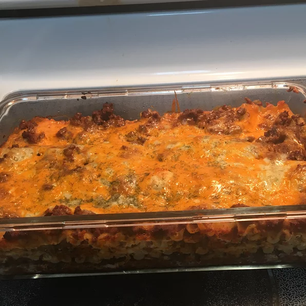

Lasagna

This is an easy recipe for lasagna
Easy to follow and execute upon, you won't be disappointed by this simple recipe.
Ingredients
- 1 pound lean ground beef
- 32 ounces spaghetti sauce
- 32 ounces cottage cheese
- 3 cups shredded mozzarella cheese
- 2 eggs
- Half cup grated parmesan cheese
- 2 teaspoons dried parsley
- salt (to taste)
- ground black pepper (to taste)
- 9 lasagna noodles
- half cup water
Steps
- In a large skillet over medium heat brown the ground beef. Drain the grease. Add spaghetti sauce and simmer for 5 minutes.
- In a large bowl, mix together the cottage cheese, 2 cups of the mozzarella cheese, eggs, half of the grated Parmesan cheese, dried parsley, salt and ground black pepper.
- To assemble, in the bottom of a 9x13 inch baking dish evenly spread 3/4 cup of the sauce mixture. Cover with 3 uncooked lasagna noodles, 1 3/4 cup of the cheese mixture, and 1/4 cup sauce. Repeat layers once more: top with 3 noodles, remaining sauce, remaining mozzarella and Parmesan cheese. Add 1/2 cup water to the edges of the pan. Cover with aluminum foil.
- Bake in a preheated 350 degree F(175 degrees C) oven for 45 minutes. Uncover and bake an additional 10 minutes. Let stand 10 minutes before serving.